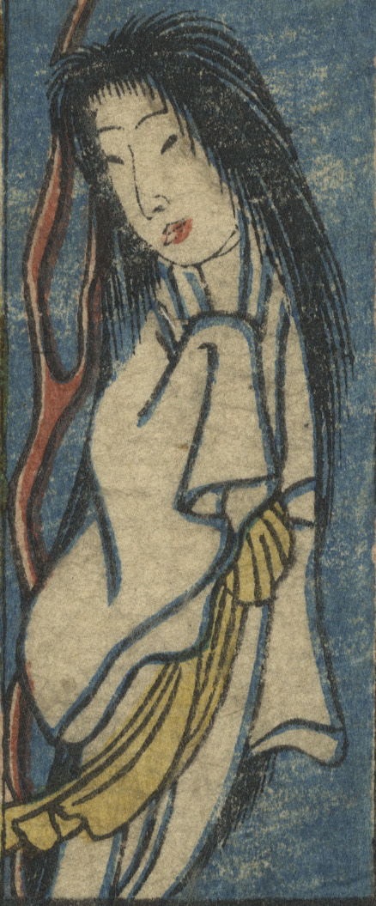

炎を背に立つ女の幽霊。白装束で、右手を前方へ垂らしている。
著作者：歌川芳員／出典：親書誌：U426_nichibunken_0321：しん板ばけ物尽；シンパン バケモノズクシ／日付：2014／資源識別子：U426_nichibunken_0321_0036_0000
Copyright (c)2010- International Research Center for Japanese Studies, Kyoto, Japan. All rights reserved.